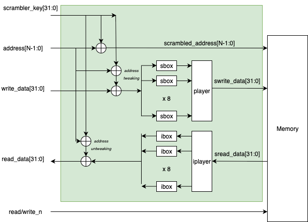

SRAM Scrambling
Both the address as well as data can optionally be scrambled. The goal of the scrambler is not secure data encryption but rather basic obfuscation to impede simple memory dumping by an attacker aiming to recover secrets. The algorithm would be straight forward to break by a trained cryptanalyst. The implementation is intentionally very simple so that the timing overhead on memory read and write transactions is minimal.
The scrambler is disabled by default, but a configuration register field can be set to turn this feature on after booting and the scrambling key is installed. When it is on, all write data transactions will have both the address and data scrambled before performing a write to memory. On read operations, the address will be scrambled in the same fashion as for writes so we have an equivalent address mapping. The read data however must be descrambled. Address data tweaks the key, which means it is mixed in to ensure that the same data at different address locations has a different scrambled value.
The scrambling key is provisioned by the ROM by copying the DRBG register contents into the local key register.
The scrambler IP consists of a generic top-level module (scrambler) and a set of pre-configured size-specific wrappers that fix the address width to match a particular SRAM depth. The generic module selects the correct address scrambling function at elaboration time through generate blocks keyed on ADDR_WIDTH. The scrambler_addr_tweak submodule expands and mixes the memory address into a 32-bit round key. All cryptographic primitives (S-boxes, permutations, and address scramble functions) are declared as automatic functions in scrambler_pkg.
Parameters
The scrambler module accepts three parameters. Only 32-bit data widths are supported in the current implementation.
| Parameter | Type | Default | Description |
|---|---|---|---|
|
|
10 |
Address width of the target SRAM. Determines which address scramble function is selected (6 through 13). Values outside this range fall through to a pass-through assignment. |
|
|
32 |
Data width. Only 32-bit operation is supported. |
|
|
0 |
Selects the permutation mode. When 0, a single 32-bit permutation ( |
Port Interface
The scrambler is purely combinational. It has no clock or reset ports.
| Port | Dir | Width | Description |
|---|---|---|---|
|
in |
|
Memory address input. |
|
in |
|
Byte mask. Reserved for future per-byte-lane gating; currently unused. |
|
in |
32 |
Scrambling key provided by the Key Manager CSR block. |
|
out |
|
Scrambled address output sent to the SRAM macro. |
|
in |
|
Plaintext write data from the CPU. |
|
out |
|
Scrambled write data to be stored in the SRAM macro. |
|
in |
|
Scrambled data read back from the SRAM macro. |
|
out |
|
Descrambled read data returned to the CPU. |
Data Scrambling Algorithm
The scrambling algorithm is an extremely rudimentary, round reduced, block cipher inspired by the PRESENT cipher. PRESENT works on 64 bit blocks, while this scrambler works on 32-bit blocks. PRESENT operates on 32 repeated rounds, while this scrambler performs only a single round. The player (permutation function) is also altered to accommodate the reduced block size i.e. word length.
The data path implements the PRESENT 4-bit S-box (sbox4) from scrambler_pkg. Eight parallel S-box instances process the 32-bit word one nibble at a time. The S-box mapping is shown in the table below.
| x | 0 | 1 | 2 | 3 | 4 | 5 | 6 | 7 | 8 | 9 | A | B | C | D | E | F |
|---|---|---|---|---|---|---|---|---|---|---|---|---|---|---|---|---|
S(x) |
C |
5 |
6 |
B |
9 |
0 |
A |
D |
3 |
E |
F |
8 |
4 |
7 |
1 |
2 |
The inverse S-box (ibox4) reverses the mapping and is used on the descramble path.
The permutation layer follows the PRESENT structure with progressive offsets of 8 bits rather than 16. Index i indicates the input bit position and P(i) indicates the output bit position.
| i | 31 | 30 | 29 | 28 | 27 | 26 | 25 | 24 | 23 | 22 | 21 | 20 | 19 | 18 | 17 | 16 |
|---|---|---|---|---|---|---|---|---|---|---|---|---|---|---|---|---|
P(i) |
0 |
8 |
16 |
24 |
1 |
9 |
17 |
25 |
2 |
10 |
18 |
26 |
3 |
11 |
19 |
27 |
| i | 15 | 14 | 13 | 12 | 11 | 10 | 9 | 8 | 7 | 6 | 5 | 4 | 3 | 2 | 1 | 0 |
|---|---|---|---|---|---|---|---|---|---|---|---|---|---|---|---|---|
P(i) |
4 |
12 |
20 |
28 |
5 |
13 |
21 |
29 |
6 |
14 |
22 |
30 |
7 |
15 |
23 |
31 |
Scrambling Procedure
First the tweaked key is xor’ed with the input write data. The output is split into 8 4-bit nibble lanes and which are fed into 16 sbox functions. The resulting values are concatenated and fed into the player permutation function to form the final scrambled data value which is written to memory.
Descrambling Procedure
The descrambling process is exactly the reverse as scrambling. The scrambled data value is read from memory and then we first perform the iplayer inverse permutation operation. This is followed by 8 inverse sbox functions and the outputs are concatenated. This word is then xor’ed with the tweaked key to recover the unscrambled read data.
Address Tweaking:
Rkey = scrambler_key[31:0] ^ {addr[N-1:0] repeated to fill 32-bits}
Scrambling:
Write_data_sbi = Write_data ^ Rkey
Write_data_sb = {
sbox(write_data_ak[31:28]),
sbox(write_data_ak[27:24]),
sbox(write_data_ak[23:20]),
sbox(write_data_ak[19:16]),
sbox(write_data_ak[15:12]),
sbox(write_data_ak[11:8]),
sbox(write_data_ak[7:4]),
sbox(write_data_ak[3:0])}
Scrambled_write_data = player(Write_data_sb)
Descrambling:
Read_data_sbi = iplayer(Scrambled_read_data)
Read_data_sbo = {
ibox(Read_data_sbi[31:28]),
ibox(Read_data_sbi[27:24]),
ibox(Read_data_sbi[23:20]),
ibox(Read_data_sbi[19:16]),
ibox(Read_data_sbi[15:12]),
ibox(Read_data_sbi[11:8]),
ibox(Read_data_sbi[7:4]),
ibox(Read_data_sbi[3:0])}
Read_data = Read_data_sbo ^ Rkey
Address Tweaking
As previously mentioned, address tweaking is necessary so that the same data at different addresses scrambles to unique values. Tweaking is performed by simply xor mixing the address with the random scrambler key to form the round key. If the address is less than 32 bits wide, then we just repeatedly concatenate the address with itself until we have 32 bits, truncating any excess bits.
The scrambler_addr_tweak submodule implements this expansion. For power-of-two-aligned widths (8 and 16), the address is replicated exactly to fill 32 bits. For non-power-of-two widths, the address is concatenated three times and the upper portion of the third copy is truncated to produce exactly 32 bits. The table below lists the expansion formula used for each supported width.
| ADDR_WIDTH | Expansion to 32 bits |
|---|---|
8 |
|
9 |
|
10 |
|
11 |
|
12 |
|
13 |
|
16 |
|
32 |
Identity (no expansion). |
The expanded address is XORed with scrambler_key_i to produce the 32-bit round_key_o.
Address Scrambling
Address scrambling is done in a similar fashion as data scrambling with an arbitrary permutation function. The address bits are first xor’ed with the key bits according to the address width. The result is then split into 3 or 4 bit lanes, and passed through one sbox per lane. Finally the sbox results are concatenated and fed through a linear permutation network. There is no descrambling operation on the address, only scrambling.
Each supported address width has a dedicated addr_scrambleN function in scrambler_pkg. These functions partition the address-key-XOR result into lanes of 3 or 4 bits, apply sbox3 (Pyjamask) or sbox4 (PRESENT) to each lane, concatenate the S-box outputs, and pass the result through the corresponding permN fixed permutation. The lane partitioning varies by width to ensure the full address is covered without padding.
| Width | S-box Lane Partition | S-box Types | Permutation |
|---|---|---|---|
6 |
|
|
|
7 |
|
|
|
8 |
|
|
|
9 |
|
|
|
10 |
|
|
|
11 |
|
|
|
12 |
|
|
|
13 |
|
|
|
Byte-Wise Scrambling Mode
When the BYTE_WISE parameter is set to 1, the permutation layer operates on each byte independently rather than across the full 32-bit word. On the write path, the eight S-box outputs are grouped into four byte lanes and each lane is permuted with perm8. On the read path, iperm8 is applied per byte lane before the inverse S-box stage. The S-box and round-key XOR stages are identical regardless of the BYTE_WISE setting.
This mode is used in the Key Manager SRAM interface where byte-level write strobes require that scrambling of one byte lane does not depend on data in other lanes.
Instantiation Variants
Five pre-configured modules are provided, each fixing the ADDR_WIDTH parameter for a specific SRAM depth. All variants default to DATA_WIDTH = 32 and BYTE_WISE = 0, though the BYTE_WISE parameter can be overridden at instantiation.
| Module | ADDR_WIDTH | SRAM Depth | Address Scramble Function |
|---|---|---|---|
|
9 |
512 words |
|
|
10 |
1024 words |
|
|
11 |
2048 words |
|
|
12 |
4096 words |
|
|
13 |
8192 words |
|
Integration in the Key Manager
The Key Manager SRAM interface (km_sram_interface) instantiates two scrambler_4096x32 instances with BYTE_WISE = 1. The first instance (u_req_scrambler) scrambles the write data and address on the request path. The second instance (u_rsp_descrambler) descrambles read data on the response path using the address that was captured when the read was issued.
The scrambler is controlled through the SCRAMBLER_KEY and SCRAMBLER_CTRL registers in the Key Manager CSR block (km_csr). The SCRAMBLER_CTRL register has two fields: enable at bit 0 and lock at bit 1. When lock is written to 1, the transition is permanent until the next reset. Once locked, the key register reads as zero, writes to it are ignored, and the scrambler is forced into the enabled state. This prevents firmware from disabling scrambling or reading back the key after provisioning.
A bypass multiplexer gates the scrambled data path. When scrambler_en_i is deasserted, addresses and data pass through unmodified. Parity is always computed on the plaintext data before scrambling, ensuring that the parity check on the read path operates on the descrambled value.
